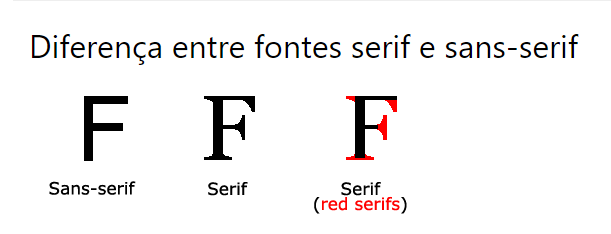

Em CSS, usamos a font-family
propriedade para especificar
a fonte de um texto.
A Font-Style propriedade é usada
principalmente para
especificar texto em itálico.
Esta propriedadetem três valores:
- normal - O texto é mostrado
Font Web Safe
Font Fallbacks
A font-sizepropriedade define o tamanho
do texto.
Ser capaz de gerenciar o tamanho do texto é importante em web design. No entanto, você não deve usar ajustes de tamanho de fonte para fazer os parágrafos parecerem títulos ou os cabeçalhos parecerem parágrafos.
font-size: 40px
A propriedade da fonte CSS
Para encurtar o código, também é possível especificar
todas as propriedades de fonte individuais em uma propriedade.
A font propriedade é uma propriedade abreviada para:
Nota: Os valores font-sizee
e font-family
são obrigatórios. Se um dos outros valores
estiver faltando, seu valor padrão será usado.